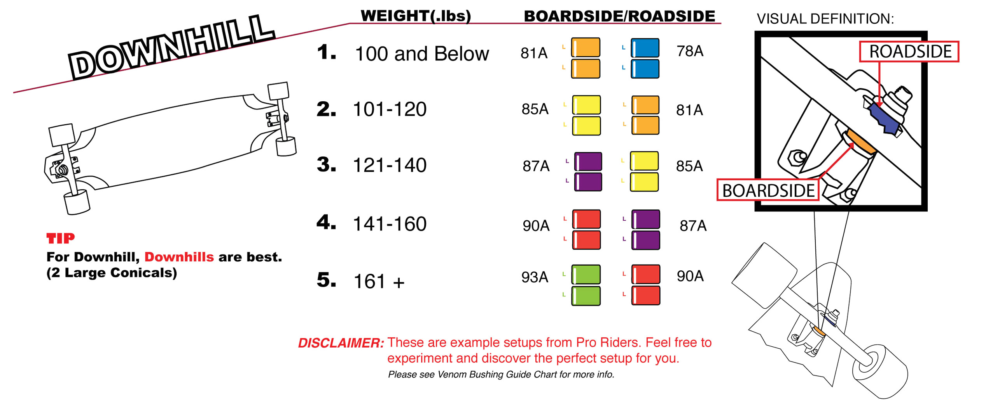

A double barrel bushing combo is the most common choice for this type of riding. However, when getting into downhill, you will soon find that riders can get very particular (and creative) with their bushing combos! When it comes to downhill the ultimate goal is to maintain speed and make it all the way down to the bottom of the hill safely, ready for another run. Since you’re typically not sliding around or riding switch, the majority of setups will be directional. This can either be done by using an asymmetrical bushing setup, with "mis-matched" bushing combos in the front and rear. (Some riders even go as far as using different trucks in the front and rear!)
